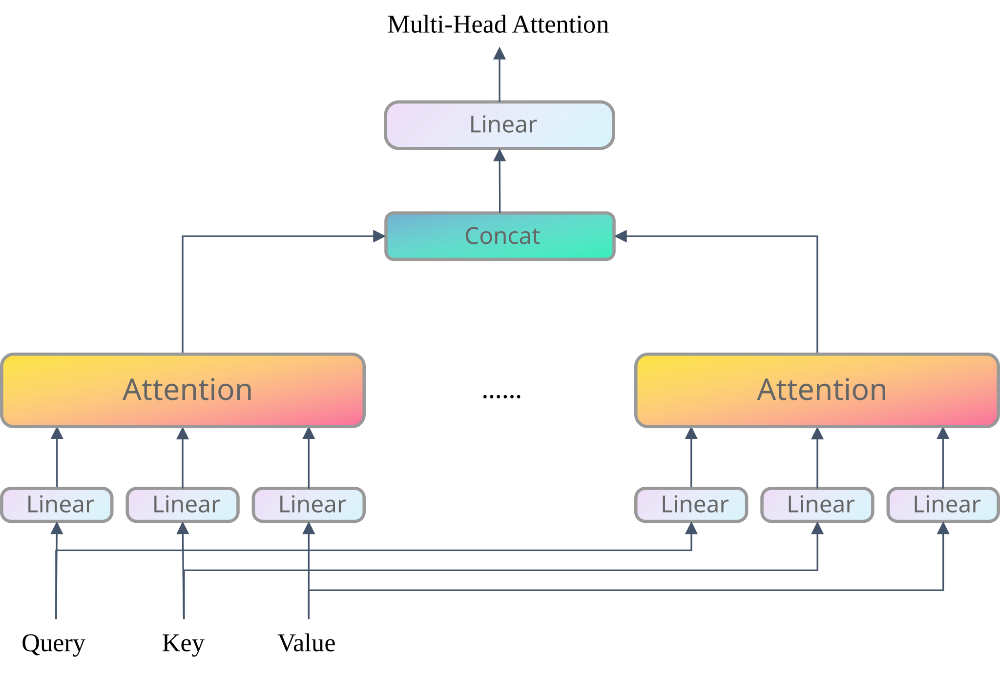
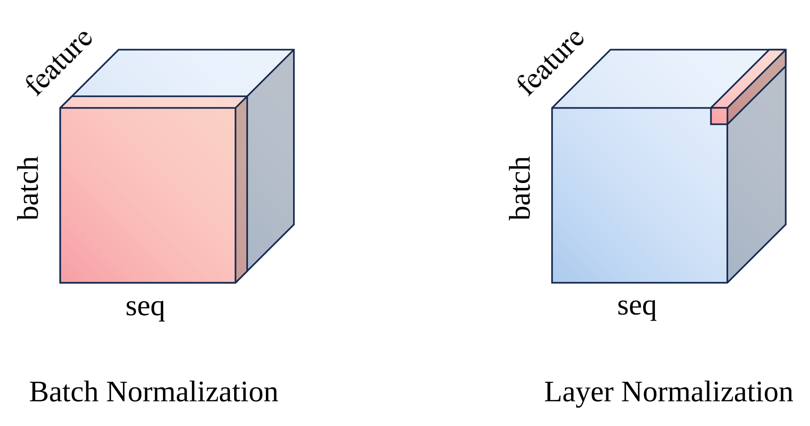

详解Transformer
详解Transformer
前言
自2017年问世以来，Transformer[1] 模型在 NLP 领域取得了巨大的成功，并在计算机视觉领域也取得了显著的进展。本文将详细介绍 Transformer 模型的结构、原理和实现，帮助读者更好地理解这一重要的深度学习模型。
背景
在 Transformer 之前，主流的序列转录模型（sequence transduction models）通常基于 RNN 或 CNN 构建。这类模型普遍采用编码器-解码器架构：编码器负责将输入序列处理成一组隐藏状态，而解码器则依据这些状态逐步生成目标输出序列。然而，RNN 和 CNN 在处理长序列时存在一些固有的问题，为了解决这些问题，Transformer 模型应运而生。
RNN
传统的序列转录模型通常使用 RNN（Recurrent Neural Network）来处理序列数据。RNN 通过递归的方式，将序列中的每个元素作为输入，并生成输入的隐藏状态表示。

如图1所示，RNN 编码器将输入序列 $x_1, x_2, \ldots, x_n$ 逐个输入，并生成对应的隐藏状态 $h_1, h_2, \ldots, h_n$。每个隐藏状态 $h_i$ 都依赖于前一个隐藏状态 $h_{i-1}$ 和当前输入 $x_i$。这种递归的方式使得 RNN 理论上可建模序列依赖，不过实际应用中很难有效捕捉长距离依赖。
循环神经网络（RNN）在处理长序列时存在几个固有缺陷。首先，如果只保留最后一个时间步的隐藏状态作为输出，序列前期的信息很容易在传递过程中丢失。虽然引入注意力机制、利用所有隐藏状态能缓解这一问题，但 RNN 的递归结构本身带来了更根本的挑战：每个隐藏状态的计算都必须依赖前一个状态，这种链式求导机制容易引发梯度消失或梯度爆炸，导致模型难以捕捉长距离依赖。此外，RNN 严格按时间步顺序（如从左到右）计算，这种串行特性使其在训练时很难进行并行加速。
CNN
为了克服 RNN 的局限性，人们尝试使用卷积神经网络（CNN）来处理序列数据。CNN 通过卷积操作捕捉局部特征，并且值得高兴的是，CNN 可以利用并行计算加速训练。

使用 CNN 的另一个好处是，输出的不同通道可以捕捉到不同的特征。例如，在图2中，我们可以期待输出的第一个通道可以捕捉到输入序列的某一种特征，而第二个通道可以捕捉到与之不同的另一种特征。
但是，CNN 的卷积核具有固定的感受野（receptive field），要想捕捉到长距离依赖，就必须堆叠多层卷积来逐步扩大感受野。CNN 中，将两个任意位置的信号关联所需的操作数随位置间距线性增长[2]（也有的研究做到了对数增长），这会使得学习远距离依赖变得十分困难。
模型结构
基于上述背景，Vaswani 等人提出了 Transformer 模型，该模型舍弃了 RNN 和 CNN，完全基于注意力机制，并同样采用编码器-解码器架构。

Encoder
原始的 Transformer 模型中，编码器由 $N=6$ 个相同的层堆叠而成，每个层包含两个子层：多头自注意力机制（Multi-Head Self-Attention）和前馈神经网络（Feed Forward Neural Network）。这两个子层之间使用了残差连接（Residual Connection）和层归一化（Layer Normalization）。
由于残差连接需要输入和输出具有相同的维度，因此 Transformer 编码器的所有子层的输入和输出维度均相同。在原论文中，输入和输出维度 $d_{\text{model}}$ 被设定为 512。
Decoder
解码器同样由 $N=6$ 个相同的层堆叠而成，每个层包含三个子层：带掩码的多头自注意力机制（Masked Multi-Head Self-Attention）、多头交叉注意力机制（Multi-Head Cross-Attention）和前馈神经网络（Feed Forward Neural Network）。其中多头交叉注意力层的 Query 来自上一个子层，而 Key 和 Value 均来自编码器最后的输出。同样地，这些子层之间使用了残差连接和层归一化，所有子层的输入和输出维度也相同，一般被设置成和编码器一样的 $d_{\text{model}}=512$。
解码器最后的输出会通过一个线性层得到 logits。最后对 logits 做 softmax 就可以将输出映射到词汇表大小 $V$ 的概率分布上。
关键机制
注意力机制
注意力是将输入查询（Query）和一组键值对（Key-Value）映射到输出的一种机制。注意力机制的核心是计算查询和键之间的相似度，并根据这些相似度对值进行加权求和。
实现这样的注意力机制有很多种方法，最为常见的是加性注意力（Additive Attention）和点积注意力（Dot-Product Attention）。加性注意力借助可学习的线性变换层，先将 Query 与 Key 投影至同一隐藏空间并进行求和，再经由 tanh 等激活函数与额外线性层，计算得到标量形式的注意力分数。点积注意力无需引入额外可学习参数，直接通过 Query 与 Key 的向量点积运算即可得到标量注意力分数。两类注意力均会对注意力分数执行 softmax 归一化，得到规整的权重分布，最终将权重与 Value 加权求和得到最终的输出。对比来看，点积注意力省去了加性注意力的复杂的广播相加与投影，复杂度更低、运算效率更高。如果能保证 Query 与 Key 维度一致，使用点积注意力是更好的选择。
缩放点积注意力
Transformer 的作者采用了一种名为缩放点积注意力（Scaled Dot-Product Attention）的方法。其计算公式如下：
$$
\text{Attention}(Q, K, V)=\text{softmax}\left(\frac{QK^T}{\sqrt{d_k}}\right)V
$$
其中 $Q\in\mathbb{R}^{n\times d_k}$ 是 Query 矩阵，$K\in\mathbb{R}^{m\times d_k}$ 是 Key 矩阵，$V\in\mathbb{R}^{m\times d_v}$ 是 Value 矩阵，$d_k$ 是键的维度。
缩放点积注意力比普通的点积注意力多了一个缩放因子 $\sqrt{d_k}$，这是为了抵消点积结果的方差随 $d_k$ 增大而增大的问题，否则注意力分数的相对差距会越来越大，导致 softmax 的结果向两端极端分布，使梯度过小，难以训练。
多头注意力
前文提到 CNN 的输出的不同通道可以捕捉到不同的特征，Transformer 考虑到了这一点，提出了多头注意力机制。多头注意力机制将输入序列 $x$ 投影成 $h$ 个“头”，每个头都执行一次注意力机制，然后将这些头的输出拼接起来，再通过一个线性层得到最终的输出。
Transformer 的 Query、Key 和 Value 原始维度均为 $d_{\text{model}}$，我们使用 $h$ 个不同的线性层将其投影到 $d_k$、$d_k$ 和 $d_v$ 维度，这样每个注意力头就可以学习到不同的特征。最终，我们将 $h$ 个注意力头的输出拼接起来，再通过一个线性层将其映射回 $d_{\text{model}}$ 维度。
$$
\begin{aligned}
\text{MultiHead}(Q, K, V) &= \text{Concat}(\text{head}_1, \ldots, \text{head}_h) W^O \\
\text{where }\text{head}_i &= \text{Attention}(QW_i^Q, KW_i^K, VW_i^V)
\end{aligned}
$$
其中，$W_i^Q\in\mathbb{R}^{d_\text{model}\times d_k}$，$W_i^K\in\mathbb{R}^{d_\text{model}\times d_k}$，$W_i^V\in\mathbb{R}^{d_\text{model}\times d_v}$，$W^O\in\mathbb{R}^{hd_v\times d_\text{model}}$。要保证 $h | d_\text{model}$，即 $d_\text{model}$ 必须是 $h$ 的整数倍。

自注意力
自注意力（Self-Attention）机制是 Transformer 的核心，通过将输入序列同时作为 Query、Key 和 Value，计算输入序列中每个元素与其他元素之间的注意力权重，并将这些权重应用于输入序列中的每个元素，从而得到一个新的输出序列。输出序列中每个元素都根据相应的重要性糅合了输入序列中所有元素的信息，得到了具有上下文信息的向量表示。
通过自注意力，我们得以一步到位地捕捉到输入序列中的长距离依赖关系，并且这个过程是完全并行的。这也是为什么如今 Transformer 能在相当多的场景中完全取代 RNN 和 CNN。
$$
\text{Self-Attention}(X)=\text{softmax}\left(\frac{XX^T}{\sqrt{d_x}}\right)X
$$
我们可以通过下表直观地对比 RNN、CNN 和 Self-Attention 的性能差异。其中 $k$ 为卷积核大小，$n$ 为序列长度，$d$ 为嵌入向量维度。
| CNN | RNN | Self-Attention | |
|---|---|---|---|
| 计算复杂度 | $O(k\cdot n\cdot d^2)$ | $O(n\cdot d^2)$ | $O(n^2\cdot d)$ |
| 并行度 | $O(n)$ | $O(1)$ | $O(n)$ |
| 最长路径 | $O(n/k)$ or $O(\log_k(n))$ | $O(n)$ | $O(1)$ |
带掩码的注意力
注意力机制在 Transformer 的实际应用中会遇到两个问题：
- 为了处理变长序列，Transformer 需要为序列添加 padding 来对齐不同长度的序列。然而，这些 padding 位置的信息是无效的，不应该参与计算。因此，我们需要一种机制来屏蔽这些无效位置的信息。
- 在解码器中，我们需要预测下一个词，而自注意力机制会考虑到序列中的所有词。我们不希望模型能够看到未来的词，因此需要一种机制来屏蔽未来的词。
鉴于上述原因，我们需要一种带掩码的注意力机制。在计算注意力分数时，我们引入一个掩码矩阵，将无效位置（padding 或 future position）的注意力分数置为负无穷，这样在经过 softmax 之后，这些位置的权重就会接近于 0，从而被屏蔽。这种掩码机制被称为因果掩码（Causal Mask）和填充掩码（Padding Mask）。
因果掩码
为了保持自回归的特性，我们需要在解码器的自注意力层中“阻止向左的信息流”，具体来说，对于位置 $i$，我们只允许它关注位置 $j\leq i$ 的位置。因此，我们引入一个大小和注意力分数矩阵相同的掩码矩阵 $\text{attn\_mask}\in\mathbb{R}^{\textcolor{blue}{\text{query\_seq\_len}}\times \textcolor{green}{\text{key\_seq\_len}}}$，其中 $\textcolor{blue}{\text{query\_seq\_len}}$ 是 Query 的长度，$\textcolor{green}{\text{key\_seq\_len}}$ 是 Key 的长度。如下所示：
$$
\begin{bmatrix}
0 & -\infty & -\infty & \cdots & -\infty \\
0 & 0 & -\infty & \cdots & -\infty \\
0 & 0 & 0 & \cdots & -\infty \\
\vdots & \vdots & \vdots & \ddots & \vdots \\
0 & 0 & 0 & \cdots & 0
\end{bmatrix}
$$
填充掩码
由于输入序列的长度可能不同，我们需要为较短的序列添加 padding。这些 padding 位置的信息是无效的，不应该参与计算。因此，我们引入一个形状为 $\textcolor{red}{\text{batch\_size}}\times \textcolor{green}{\text{key\_seq\_len}}$ 的掩码矩阵。$\textcolor{red}{\text{batch\_size}}$ 为一个批次内的样本数量，每个样本的 padding 都不同。该掩码矩阵为 $\text{key\_padding\_mask}\in\mathbb{R}^{\textcolor{red}{\text{batch\_size}}\times \textcolor{green}{\text{key\_seq\_len}}}$。下面给出一个可能的例子：
$$
\begin{bmatrix}
0 & 0 & -\infty & \cdots & -\infty \\
0 & 0 & 0 & \cdots & 0 \\
0 & 0 & 0 & \cdots & -\infty \\
\vdots & \vdots & \vdots & \ddots & \vdots \\
0 & 0 & 0 & \cdots & -\infty
\end{bmatrix}
$$
组合掩码
在一个批次内，我们将填充掩码和因果掩码广播为 $\textcolor{red}{\text{batch\_size}}\times\textcolor{orange}{\text{num\_heads}}\times\textcolor{blue}{\text{query\_seq\_len}}\times\textcolor{green}{\text{key\_seq\_len}}$，然后逐元素相加，得到 $\text{merged\_mask}\in\mathbb{R}^{\textcolor{red}{\text{batch\_size}}\times\textcolor{orange}{\text{num\_heads}}\times \textcolor{blue}{\text{query\_seq\_len}}\times \textcolor{green}{\text{key\_seq\_len}}}$。
按位置的前馈神经网络
由于通过注意力层后，每个 token 的表示已经包含了全局信息，因此我们只需要一个简单的全连接层来进一步处理这些信息。Transformer 的前馈神经网络由两个线性层和一个 ReLU 激活函数组成。第一个线性层将输入映射到更高维度（如 2048），第二个线性层将结果映射回原始维度。
$$
\text{FFN}(x)=\text{ReLU}(xW_1+b_1)W_2+b_2
$$
层归一化
Transformer 处理的是变长序列，每个 batch 中样本的长度可能不同。如果使用 Batch Normalization (BN)，会出现两个问题：
- 训练时：BN 对同一个特征通道在不同样本之间做归一化，变长的序列会导致均值和方差抖动剧烈。
- 预测时：BN 依赖训练阶段累积的全局统计量（均值和方差），但不同长度的样本会混在一起，这些统计量很难准确反映序列的真实分布。
即使计算时无视 padding，上述问题也不能得到很好的解决。因此 Transformer 采用 Layer Normalization (LN)。LN 对每个样本的每个token的所有特征进行归一化，与其他样本或同一个样本的其他token均无关，既不受序列长度波动的影响，也不需要维护全局统计量，在预测时直接用当前样本的当前token的均值和方差即可。

LN 在 Transformer 中有两种常见实现方式，区别仅在于它放在残差连接的前面还是后面，二者的对比如下[3]：
-
Post-LN（原始 Transformer 论文方案）
计算顺序：子层计算 → 残差相加 → LayerNorm
$$
\text{Output}=\text{LayerNorm}(x+\text{Sublayer}(x))
$$这种结构在层数较浅（如 6 层）时没问题，但随着层数加深，靠近输出层的梯度会偏大。如果一上来就用较大的学习率，训练很容易不稳定。所以 Post-LN 几乎必须搭配 学习率 warm‑up，等梯度稳定后再逐步增大学习率。这是它训练起来较为麻烦的地方。
-
Pre-LN（现代主流方案）
计算顺序：LayerNorm → 子层计算 → 残差相加
$$
\text{Output}=x+\text{Sublayer}(\text{LayerNorm}(x))
$$因为每层输入先被归一化，梯度的尺度会被自然地压缩，不会在深层爆炸或消失。因此 Pre-LN 对学习率更宽容，可以完全去掉 warm‑up，直接用一个较大的学习率从零开始训练，收敛更快，也省去了调 warm‑up 步数的麻烦。
warm‑up：在训练初期，学习率从一个很小的值逐渐增大到预设的最大值，避免模型一开始因为学习率过大而出现梯度爆炸或不稳定。
嵌入层
嵌入层将输入序列中的每个词映射为一个固定长度的向量。词嵌入的维度 $d_\text{model}$ 必须是多头注意力机制中 $h$ 的整数倍。
Transformer 包含两个输入嵌入层（编码器输入、解码器输入）和一个输出线性层（解码器输出→logits），这三者通常共享权重矩阵。
Transformer 原论文将编码器和解码器的输入嵌入层的权重分别乘以了 $\sqrt{d_\text{model}}$。这是因为嵌入层的输出嵌入向量的 L2 范数通常比较小。在嵌入向量较大的情况下，嵌入层的权重就会比较小，而原论文使用了三角函数作为位置编码，位置编码的取值范围为 $[-1,1]$，为了使嵌入向量和位置编码的量级更加相近，要对嵌入层的权重进行缩放。
位置编码
自注意力机制虽能高效捕捉序列中的长距离依赖，但它本身具备置换不变性——即便随机打乱输入序列的 token 顺序，自注意力的计算结果仅会对应调整顺序，完全无法感知 token 的原始位置与序列顺序。而序列的位置信息是语义表达的核心（例如 “我吃饭” 和 “饭吃我” 的语义截然不同），因此必须为每个 token 注入显式的位置信息。
Transformer 原文中给出了一种基于三角函数的位置编码方法，将位置编码与词嵌入向量逐元素相加，作为最终的序列输入表示。具体来说，对于序列中的位置 $pos$、嵌入向量的维度索引 $i$，位置编码的计算公式为：
$$
PE_{(pos,2i)}=\sin\left(
\frac{pos}{10000^{2i/d_\text{model}}}
\right) \\
PE_{(pos,2i+1)}=\cos\left(
\frac{pos}{10000^{2i/d_\text{model}}}
\right)
$$
其中：
- $pos$ 为 token 在序列中的绝对位置；
- $d_\text{model}$ 是嵌入向量的维度;
- $i$ 为嵌入向量内部的维度下标（从 $0$ 到 $d_\text{model}-1$）。
这种设计有几个好处：
- 位置编码是固定的，不包含可训练参数。
- 位置编码与嵌入向量直接逐元素相加，计算简单。
- 位置编码每个维度对应的波长构成一个等比数列，从 $2\pi$ 均匀增长到 $10000\cdot2\pi$，能同时覆盖近距离、中距离、远距离的位置依赖关系。
- 可以很好的捕捉到相对位置关系：位置 $pos+\delta$ 处的位置编码可以由位置 $pos$ 处的位置编码通过线性投影得到。令 $\omega_i=1/10000^{2i/d_\text{model}}$，则有：
$$
\begin{bmatrix}
\cos(\delta\omega_i) & \sin(\delta\omega_i) \\
-\sin(\delta\omega_i) & \cos(\delta\omega_i)
\end{bmatrix}
\begin{bmatrix}
PE_{(pos,2i)} \\
PE_{(pos,2i+1)}
\end{bmatrix} =
\begin{bmatrix}
PE_{(pos+\delta,2i)} \\
PE_{(pos+\delta,2i+1)}
\end{bmatrix}
$$
总结
从 2017 年被提出至本文撰写之时（2026 年 3 月），Transformer 已从一款专注机器翻译的序列转录模型，彻底演变为现代深度学习领域的核心基础设施。原论文作者在结论中作出的三项预判 —— 将注意力架构拓展至文本以外的模态、研发高效的局部受限注意力机制、弱化生成过程的串行依赖，如今不仅全部落地，更实现了远超预期的技术演进。
在自然语言处理领域，Transformer 实现了全域主导，BERT、GPT 系列、LLaMA、Qwen 等主流大模型均以其为底层骨架；计算机视觉方向，ViT 及其衍生架构已全面取代传统 CNN 成为主流范式；多模态领域更是全面拥抱 Transformer，GPT-5.4、Gemini 3.1、Sora 2等通用人工智能模型均以该架构为核心基座，打通文本、图像、音频、视频乃至 3D 内容的统一建模。与此同时，FlashAttention-4、稀疏注意力、滑动窗口注意力、混合专家（MoE）等工程优化方案持续迭代，让 Transformer 可高效支撑千万级 token的超长序列与大规模多模态输入，作者当年构想的 “跨模态适配” 与 “高效长序列处理” 均已成为工业级标准能力。依托 Hugging Face、vLLM、TensorRT-LLM 等完善的开源与工程化生态，Transformer 成为当前硬件适配最成熟、部署链路最完善、规模化落地最广泛的 AI 基础架构，并在可预见的未来，继续作为通用人工智能的核心基座持续迭代。